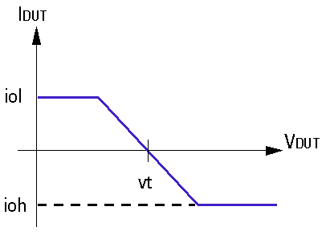
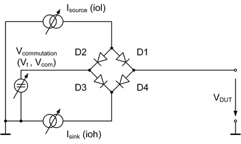

Active load termination
For an active load termination, the level setup specifies the load currents (iol, ioh) and the commutation voltage (vt).

You use the active termination to load an o or io pin with a well-defined current. You define a load current (ioh) for the high output level and a load current (iol) for the low output level.
Depending on the actual output voltage, the active termination controls the load current. It compares the output voltage to the commutation voltage (vt), which is also defined in the level setup:
- If the actual output voltage is greater than the commutation voltage, the load current is ioh.
- If the actual output voltage is below the commutation voltage, the load current is iol.
The diagram below shows the principle of the active load circuit that is connected to each of the digital pins.

The applicable range of the commutation voltage (vt, also referred to as Vcom) differs on the various digital channel cards. Refer to the following specification pages.
| Digital card | Specifications |
|---|---|
| Pin Scale 1600 | PS1600 programmable load |
| Pin Scale 5000 | Pin Scale 5000 programmable load |
Functional changes
- Introduced before SmarTest 6.3.2
- SmarTest 7.0.1: Added Pin Scale 9G termination.
- SmarTest 7.10.2: New card Pin Scale 5000